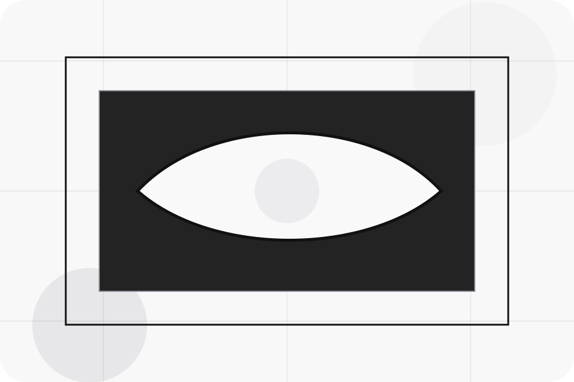
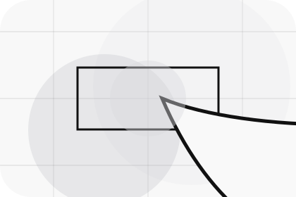
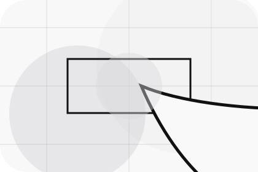
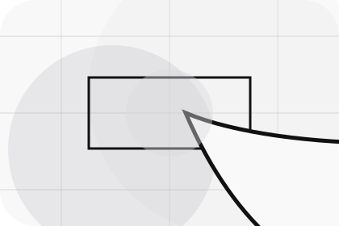
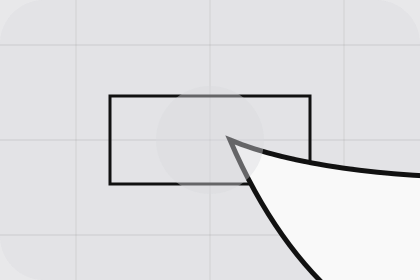

Context
Brands gives the page a specific angle instead of repeating the navigation label.
Dealer / 01
Dealer opens as a clear automotive decision hub: what Motor offers, who it helps, why it matters, and which route to take first.
The first screen combines positioning, proof, primary action, and fast internal navigation, so people can act immediately or compare the rest of the dealer route with context.
Stark vehicle product hero
Select the closest route and Motor keeps the next step, proof, and follow-up expectation aligned with purchase confidence and desire.

Dealer / 02
Brands adds dark context to the dealer route, using the minimal ev showroom structure to support purchase confidence and desire before visitors choose a next step.
Motor uses precise vehicle cards and focused copy to make the decision easier to scan, aligning the section with purchase confidence and desire rather than filling space.
Explore DealerBrands gives the page a specific angle instead of repeating the navigation label.
The precise vehicle cards show what to compare, what to avoid, and what matters most for automotive, vehicles & mobility products visitors.
The final cue points to a useful internal route so the section keeps the journey moving.
Dealer / 03
Team introduces the people, roles, or specialist credibility behind Motor so the decision feels less anonymous.
The copy ties names, roles, credentials, or availability back to the decision on the page instead of treating profiles as decorative biographies.
Explore Dealer

The person, team, or specialist function connected to team is easy to understand.
Dealer / 04
Standards gives the proof layer for dealer: standards, evidence, and reassurance that make the next decision feel grounded.
Instead of relying on vague claims, Motor presents visible standards, process cues, and proof artifacts that help automotive visitors judge fit.
Explore DealerVisible proof that helps visitors believe the claims behind standards.
The quality, safety, or operating expectation this section makes explicit.
What becomes clearer before someone decides whether to book a test drive.
Dealer / 05
Reviews converts customer proof into a useful buying signal: the problem, the experience, and what changed afterward.
Proof stays believable by focusing on situation, service experience, and practical change rather than vague praise or unsupported results.
Explore DealerWhat the visitor needed before choosing Motor, written with enough context to feel real.
How the service, product, or support felt during the process, not just that it was good.
What became easier to decide, complete, buy, book, or trust after the interaction.
Dealer / 06
Facilities adds dark context to the dealer route, using the minimal ev showroom structure to support purchase confidence and desire before visitors choose a next step.
Motor uses precise vehicle cards and focused copy to make the decision easier to scan, aligning the section with purchase confidence and desire rather than filling space.
Explore DealerMotor structures facilities around context, judgment, and a clear next route so visitors can compare the block quickly before they book a test drive.
Book Test DriveDealer / 08
Experience adds dark context to the dealer route, using the minimal ev showroom structure to support purchase confidence and desire before visitors choose a next step.
Motor uses precise vehicle cards and focused copy to make the decision easier to scan, aligning the section with purchase confidence and desire rather than filling space.
Explore DealerExperience gives the page a specific angle instead of repeating the navigation label.
The precise vehicle cards show what to compare, what to avoid, and what matters most for automotive, vehicles & mobility products visitors.

The final cue points to a useful internal route so the section keeps the journey moving.
Dealer / 09
Trust gives the proof layer for dealer: standards, evidence, and reassurance that make the next decision feel grounded.
Instead of relying on vague claims, Motor presents visible standards, process cues, and proof artifacts that help automotive visitors judge fit.
Explore DealerVisible proof that helps visitors believe the claims behind trust.
The quality, safety, or operating expectation this section makes explicit.
What becomes clearer before someone decides whether to book a test drive.
Dealer / 10
Motor closes the dealer route with a clear action, a quick reminder of the value, and a low-friction way to book a test drive.
Visitors who are ready can use the primary action. Visitors who are still comparing can scan the section links, proof, and support routes before they book a test drive.
Book Test DriveThe final block keeps the choice simple: act now, compare one more proof route, or send enough detail for a focused response.
Book Test Drivepurchase confidence and desire
A vehicle showroom site with precise white space, car-card rhythm, finance paths, and test-drive CTAs. Dealer ends with a direct path to book a test drive, plus enough context for visitors who still need to compare.

Book Test DriveInformation is provided for planning and should be reviewed for the final client, location, and operating rules.